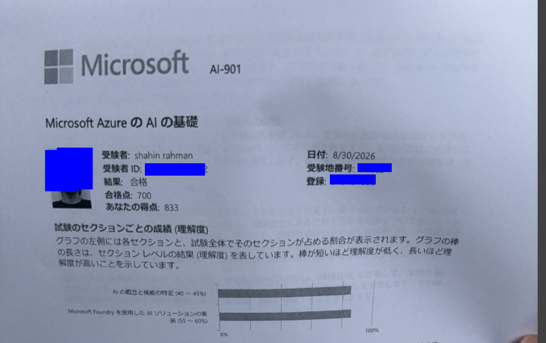
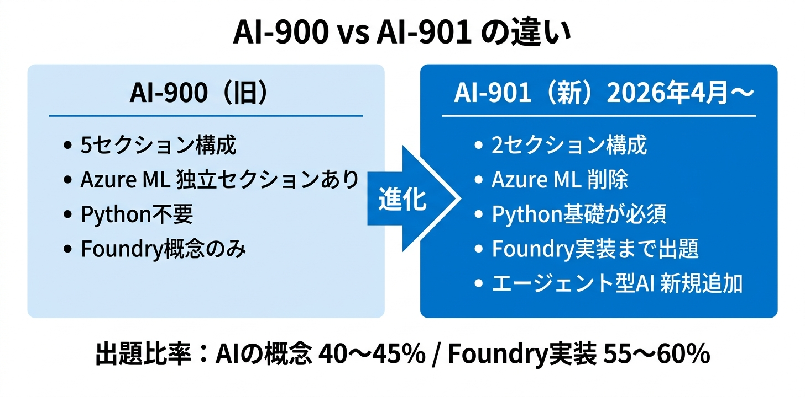
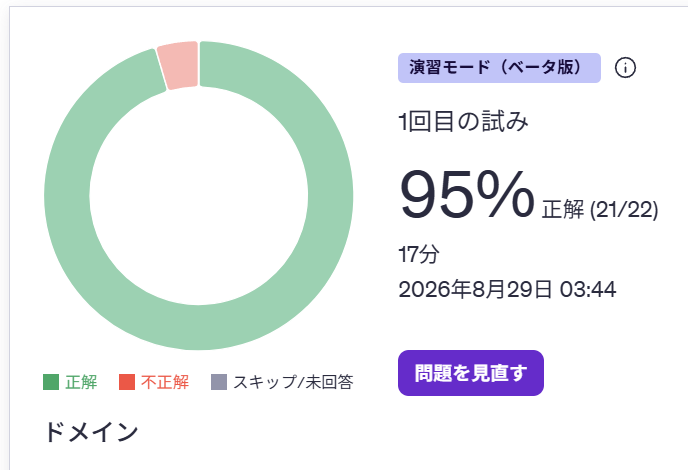
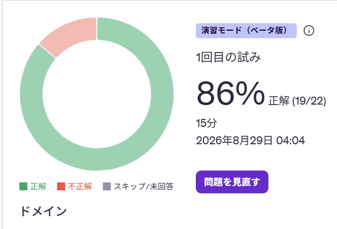
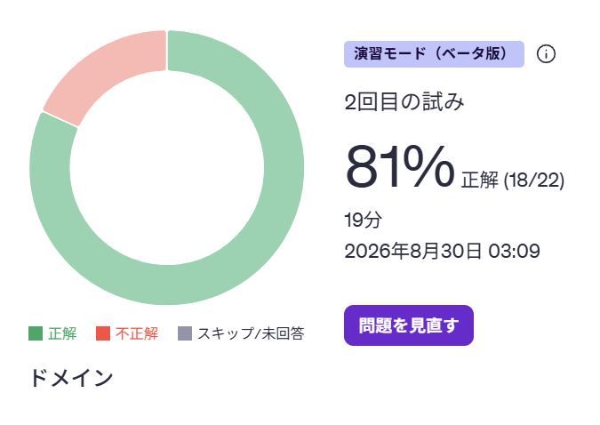
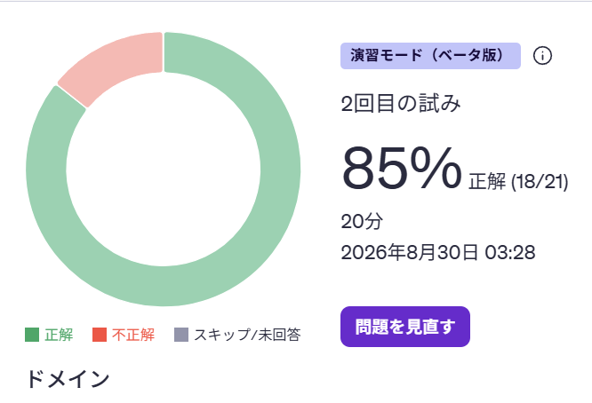
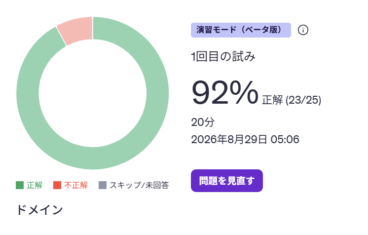
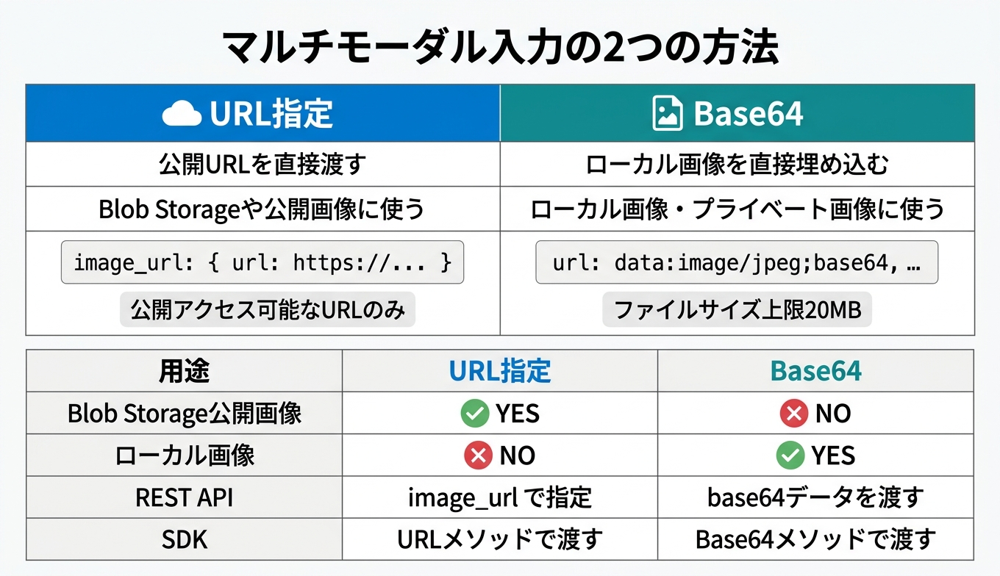

こんにちは！最近Microsoft Foundryを実務で触りながらAI資格を整理している横浜情報機器株式会社インターン生のロホマン シャヒンです。
2026年8月30日、AI-901（Microsoft Azure AI Fundamentals）に合格しました（得点：833/700）。実務でFoundryを触っている流れで、ちゃんと公式ドキュメントベースで学習しておきたいと思ったのがきっかけです。

この試験、AI-900の後継なんですが、内容がけっこう変わっています。合格するまでの勉強法と、試験で感じた注意点を整理しました。
AI-901は2026年4月15日にAI-900から更新された試験です。試験コードが変わっただけではなく、出題構成と求められる知識のレベルが大きく変わっています。
| 項目 | 内容 |
|---|---|
| 試験コード | AI-901 |
| 正式名称 | Microsoft Azure AI Fundamentals |
| 合格点 | 700点（1000点スケール） |
| 前提資格 | なし |
| 英語版更新日 | 2026年4月15日 |
AI-900と比べると、「概念を知っている」だけでは受からなくなりました。Python構文・SDK・REST APIの基礎知識が明示的に必要になっています。

| 観点 | AI-900（旧） | AI-901（現行） |
|---|---|---|
| 受験者像 | 技術・非技術両方を対象 | AIソリューション開発キャリアの始まりを対象 |
| 前提知識 | クラウドの基本程度（任意） | Python・REST API・SDK の理解が必須 |
| 試験構成 | 5セクション（各15〜25%） | 2セクション（40〜45% / 55〜60%） |
| Azure ML | 独立セクションで出題 | 削除（ML概念は凝縮） |
| 主要プラットフォーム | Azure AI Foundry（概念のみ） | Microsoft Foundry（実装まで） |
| エージェント型AI | 記載なし | 新規追加 |
| Content Understanding | 記載なし | 新規追加 |
AI-900取得済みの方なら、追加で学習が必要なのはFoundry関連の実装部分だけです。概念系はそのままカバーできます。
出題は2セクションのみ、シンプルな構成になりました。
| セクション | 出題比率 |
|---|---|
| 1. AIの概念と機能を特定する | 40〜45% |
| 2. Microsoft Foundryを使用してAIソリューションを実装する | 55〜60% |
セクション1（AI概念） では、責任あるAIの6原則・AIモデルのコンポーネント・生成AI・エージェント型AI・テキスト分析・音声・コンピュータービジョン・情報抽出などが出ます。
セクション2（Foundry実装） が新しい部分です。Foundryポータルでのモデルデプロイ、SDKを使ったチャットクライアントアプリ、単一エージェントの構築・テスト、マルチモーダル入力、Azure Content Understanding（ドキュメント・画像・音声からの情報抽出）が出題範囲に入っています。
試験全体の半分以上がFoundry関連の実装問題なので、Foundryをまったく触ったことがない方は一度ポータルを触っておくと理解がぐっと深まります。
正直なところ、すでにAZ-900・AI-900・AZ-104・AZ-305などを持っていて、実務でFoundryも触っていたので、勉強時間はかなり短くなりました。
① Microsoft Learn — 公式ラーニングパスを一周
まず公式から始めました。Introduction to AI in Azureのラーニングパスが試験範囲に対応していて、セクション2（Foundry実装）の内容も含まれています。
Foundryを触ったことがある人は流し読みでも十分です。概念の整理に使いました。
② Udemy 問題集
【うかる！】AI-901：Microsoft Azure AI Fundamentals 最強問題集 を一周しました。約1時間。
全体の正答率は8割超えでした。実際のスコアはこちら：





この問題集で8割を安定して取れていれば、本番試験でも合格ラインには届くと思います。
③ AI Skills Navigator（公式模擬試験）
Microsoft公式のAI Skills Navigatorでも事前に確認しました。問題の雰囲気と出題傾向を確かめるのに使いました。
| 教材 | 時間 |
|---|---|
| Microsoft Learn（ラーニングパス） | 約1.5時間 |
| Udemy問題集 | 約1時間 |
| AI Skills Navigator | 約0.5時間 |
| 合計 | 約3時間 |
AI-900未取得の方や、AIの概念があまり馴染みがない方は、もう少し時間をかけた方がいいと思います。ただ、前提資格は一切必要ないファンダメンタルな試験なので、Azureを使ったことがなくても十分に挑戦できます。
総合的にはそこまで難しくなかったんですが、引っかかりやすいポイントが2つありました。
コードを実行するわけではないですが、SDKの使い方・メソッドの引数・返り値の形式などを問う問題が出ます。Foundry SDKのコードをざっと読んでおくと安心です。
これが地味に引っかかりポイントです。ビジョン対応モデルに画像を渡す方法が2種類あります。

| 方法 | 用途 |
|---|---|
| URL指定 | Blob Storageや公開URLの画像を送る |
| Base64 | ローカル画像を直接埋め込む |
REST APIでは image_url フィールドでURLまたは
data:image/jpeg;base64,...
形式のデータを渡します。SDKではメソッドを通して画像を渡せます。「どの場面でどちらを使うか」を整理しておくと問題でも迷いません。
試験勉強をしていて気づいたのですが、AI-901はAzure特有のサービス名を覚えるだけの試験ではないです。LLMやRAG、MCPなど、業界全体で使われる概念が体系的に出てくるので、Azureを普段触らない方にも意外と使える知識が身につきます。
試験範囲で登場する主要なAI用語をまとめておきます。
| カテゴリ | 用語 |
|---|---|
| 基本概念 | LLM、Token、Context Window、Prompt |
| 拡張・改善 | Grounding、RAG（Retrieval-Augmented Generation）、Fine-tuning、Embedding |
| 検索・取得 | Vector Search |
| 出力品質 | Hallucination |
| 自律型システム | Agent、Tool Calling、MCP（Model Context Protocol） |
| 入力形式 | Multimodal |
| 倫理・安全 | Responsible AI |
特にRAG・Agent・MCPあたりは最近の業界トレンドとも直結していて、試験勉強しながら「あ、これ実務でやってることだ」となる瞬間が多かったです。
次に取得を目指しているのはAzure AI Apps and Agents Developer Associateです。また受かったら体験記を書きます！
この記事が少しでも参考になったら、ぜひシェアしていただけると嬉しいです！